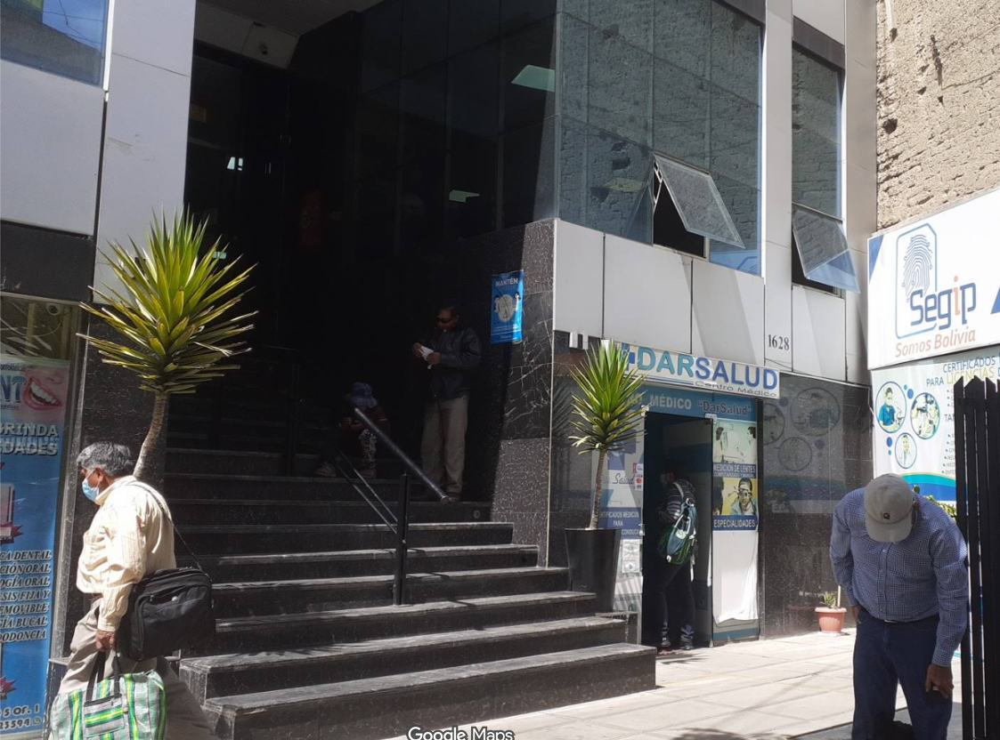

Una vez tengas todos los requisitos disponibles y a tu alcance, puedes iniciar tu trámite.
Al iniciar un trámite se te pedirán diferentes requisitos, verifica que todos sean correctos para facilitar la verificación.
Después de subir todos los requisitos el trámite entrará en una etapa de revisión, una vez aprobado se te enviará una notificación con la confirmación u observaciones.
Para poder tramitar por primera vez cualquier categoría de licencia, existen cinco requisitos a cumplir y un costo a pagar según la categoría.
Para la renovación de cualquier categoría existen cuatro requisitos. No es necesario volver a dar un exámen de habilidades, a menos que hayan pasado más de cinco años y un día.
Para renovar y subir de categoría al mismo tiempo, existen cinco requisitos.
En caso de pérdida o extravío, se puede obtener un duplicado de licencia. Es necesario un formulario de denuncia proporcionado por SEGIP.
RequisitosSube tus requisitos en cualquier momento y serán revisados lo más antes posible.
Te facilitamos el pago de forma online, solo deberas subir un comprobante.
Una vez aprobado el tramite, solo debes recoger tu licencia de una agencia SEGIP.